Look behind the curtain!
For thousands of years, humans have tried to understand the forces
that define everything around us through "rules"
written in the language of mathematics.
Many of these concepts, when rendered with the right colors
and textures, result in beautiful images.
Below are some of the images featured in an upcoming book. All are original,
mathematically accurate renderings of equations that describe our universe.
None were created using AI.
A visual journey through the mathematics that explains our universe!
A book is coming with these (and hundreds more images). Get notified when it is available.
No spam. Only updates about the book, and final email when the book is out.
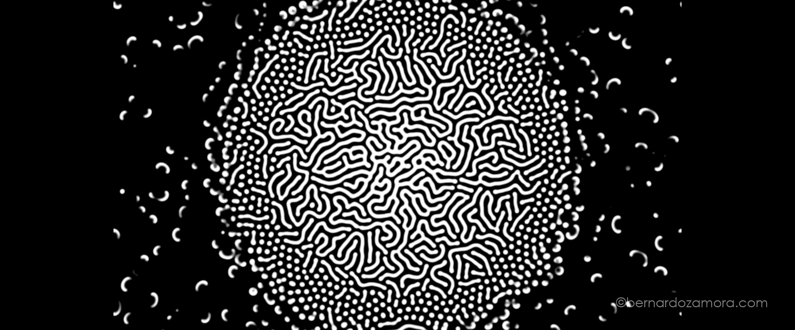
Two chemicals of different concentrations react. As they diffuse, they produce these organic patterns, which are calculated using two partial differential equations.
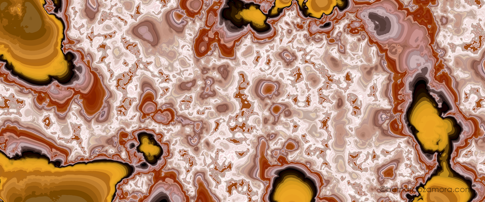
Layering several levels of 'mathematical noise' creates natural-looking patterns resembling clouds or marble. This is calculated by summing noise at different amplitudes and frequencies.
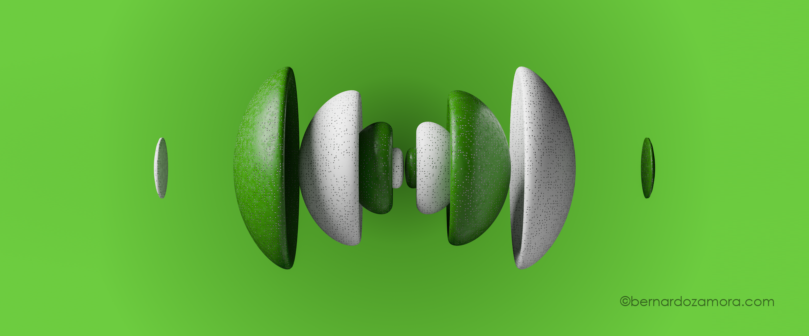
Electrons are three-dimensional wavefunctions defined by the Schrödinger equation. This isosurface shows a hydrogen orbital state, with colors representing the positive and negative mathematical phases.
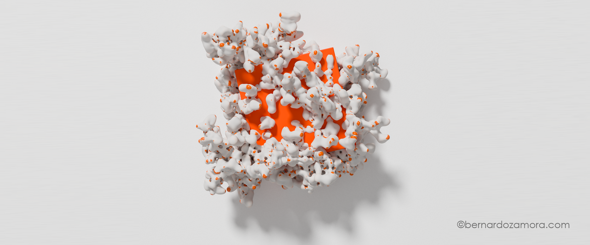
Coral, fungi and root growth are emulated with a technique where connected points pull toward their neighbors but push away from crowded areas, with new points sprouting wherever space opens up.
Visualizing equations with complex numbers require adding colors or showing only part of the result. This image plots the complex function (z+1i)/(z-1i) using 'Domain coloring'.
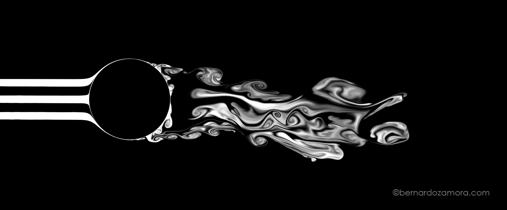
When a gas moves past a solid object, it can result in a swirling turbulent pattern or a calmer 'laminar flow' depending on the speed and viscosity. This image is the result of 40 trillion calculations.
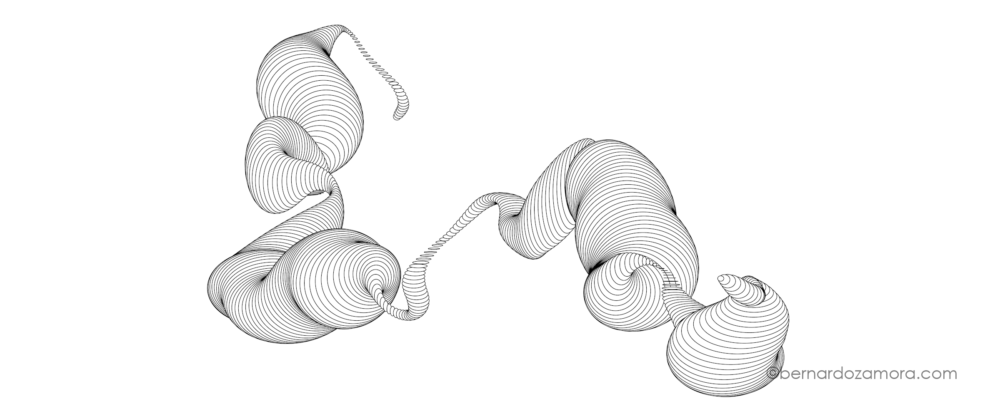
While complete randomness exists at the quantum level, nature frequently uses 'smooth' randomness, like the rolling contours of terrain. This organic flow is created using 'Perlin noise'.
Described by Felix Klein in 1882, the Klein Bottle has no volume, and its true form exists in four dimensions. Rendered in crystal with amber liquid.
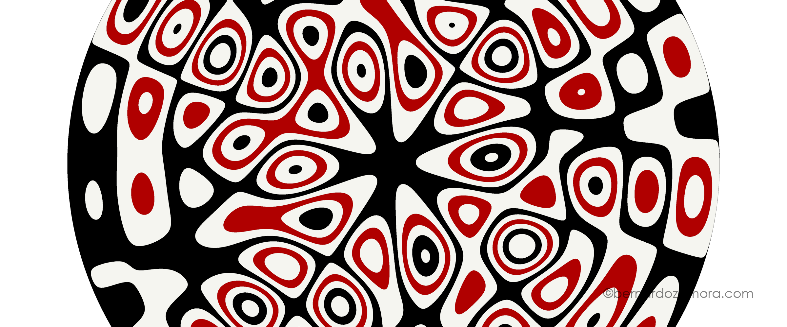
When a metal plate is vibrated at a resonant frequency, it generates geometric Chladni patterns. This render of a Chladni plate is color-coded based on the vibration magnitude.
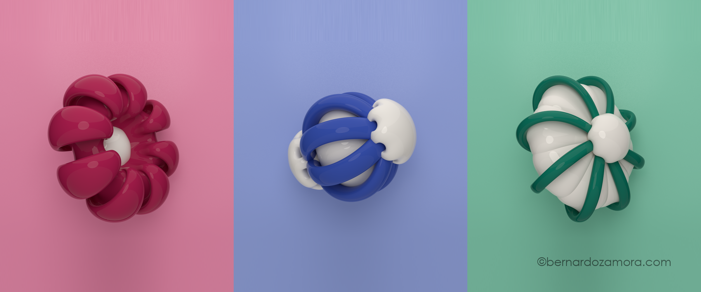
In topology, a sphere can be turned inside out without tearing, puncturing, or sharp creases. This piece captures three snapshots of that geometric transformation, showing different stages of this complex topological process.

Our Milky Way is currently racing toward the Andromeda Galaxy at ~246,000 mph. This plate tracks 16 million stars and calculates the result of a possible side-collision in 425 million years.
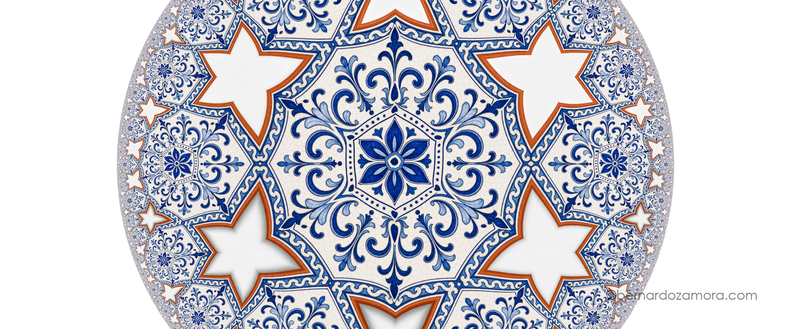
In hyperbolic geometry, a plane can infinitely be tiled with a repeating shape. This plate is based on an intricate, Mexican Talavera-style ceramic pattern, projected on a Poincaré disk.
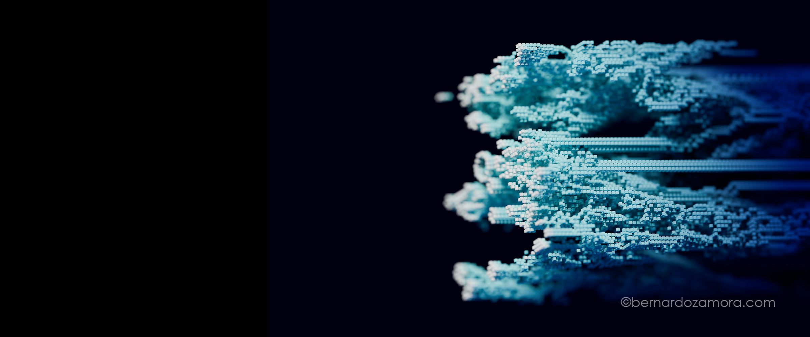
Conway's Game of Life uses just four simple local rules to generate complex, organic behavior. This image captures several of generations evolving over time, extruded into voxel-based 3D structure.
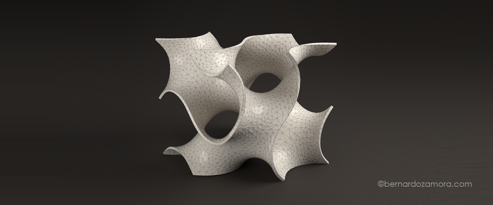
The gyroid is a triply periodic 'minimal surface' that twists without ever intersecting itself. It contains zero straight lines or flat planes, and every point on this shape forms a perfect saddle.
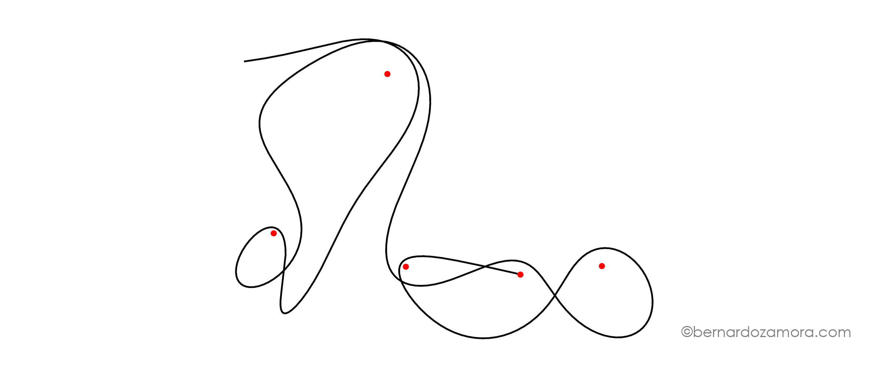
The path of an object falling close to several planets is highly chaotic. This example shows the path around five planets before the object collides with one, inadvertently creating the shape of a person lying down and looking at the sky.
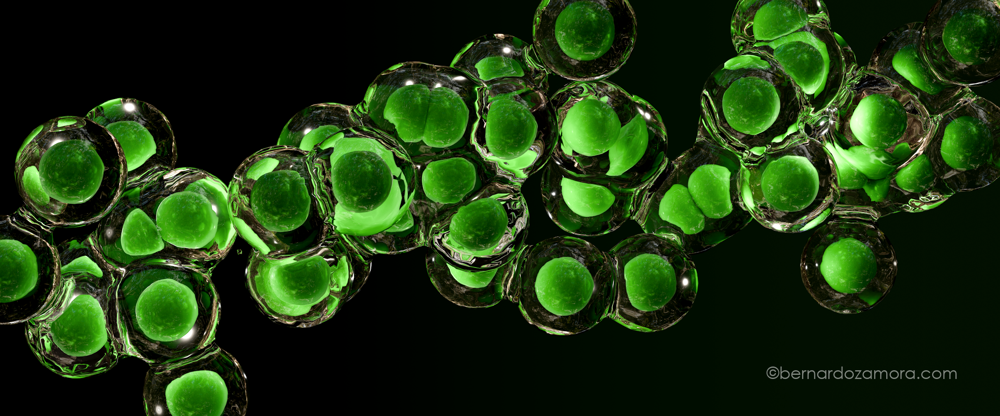
Purely random fluctuations are believed to govern quantum events. By assigning random values to position, scale, and surface displacement, and scattering them along a path, it manifests as a microscopic-looking cell
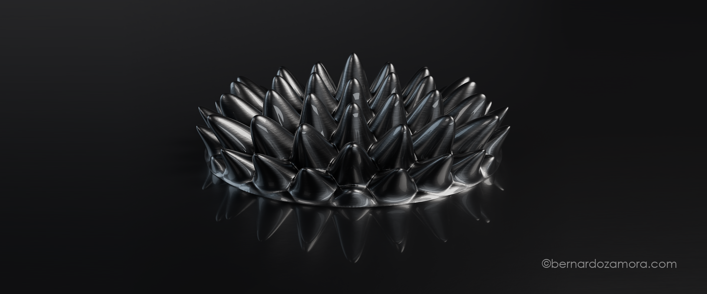
Ferrofluids are liquids packed with tiny magnetic particles. When exposed to a magnetic field, Ferrofluids undergo a 'Rosensweig instability,' which renders visible and otherwise invisible magnetic field.
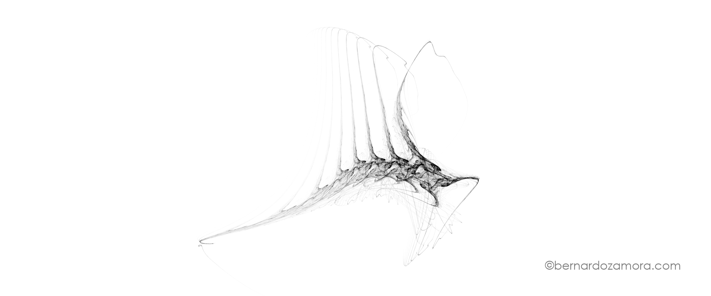
An Iterated Function System takes an initial point and repeatedly applies a function, plotting all intermediate points. After millions of times, we get highly complex organic-like structures.
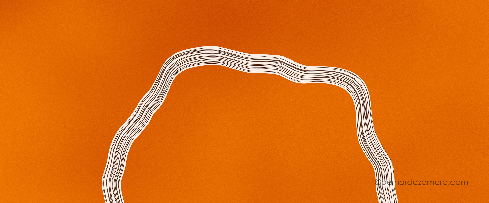
This plate utilizes Fractional Brownian Motion (fBm), 'noise with memory', layering hundreds of distinct fBm values at varying scales and frequencies to generate the line patterns.
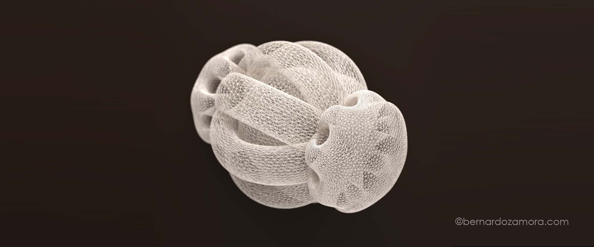
In topology, a sphere can be turned inside out without tearing, puncturing, or sharp creases. This piece captures a snapshot of that geometric transformation, exposing the intricate self-intersections of the surface.
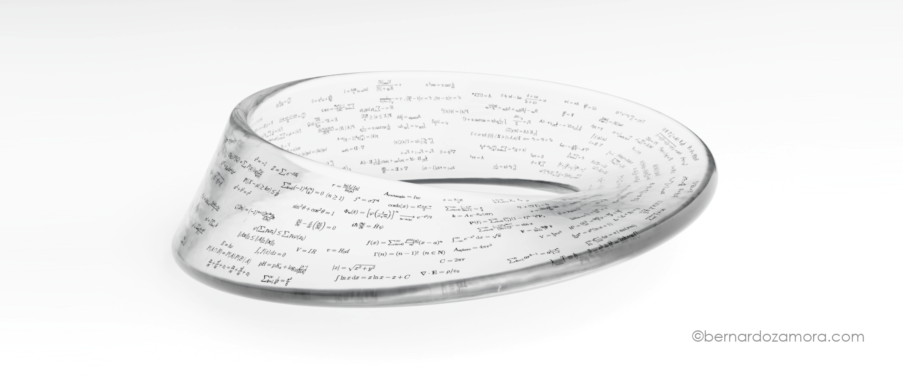
A Möbius strip is a topological wonder created by giving a ribbon a single half-twist and joining the ends, resulting in a continuous surface with only one side and one edge. This plate highlights that endless geometry.
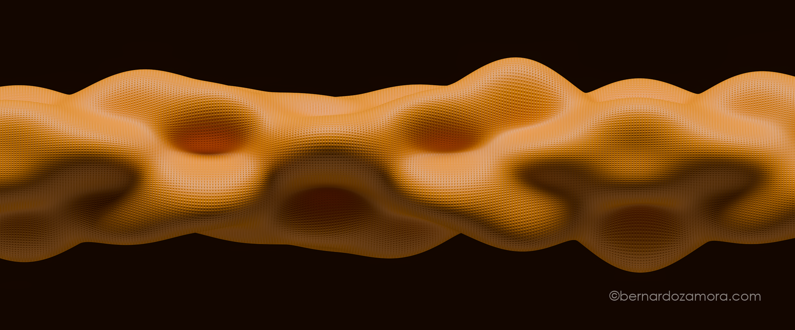
Sound travels as waves through a physical medium. This plate visualizes the wave interference created by sending two distinct frequencies from opposite ends of a cylindrical space.
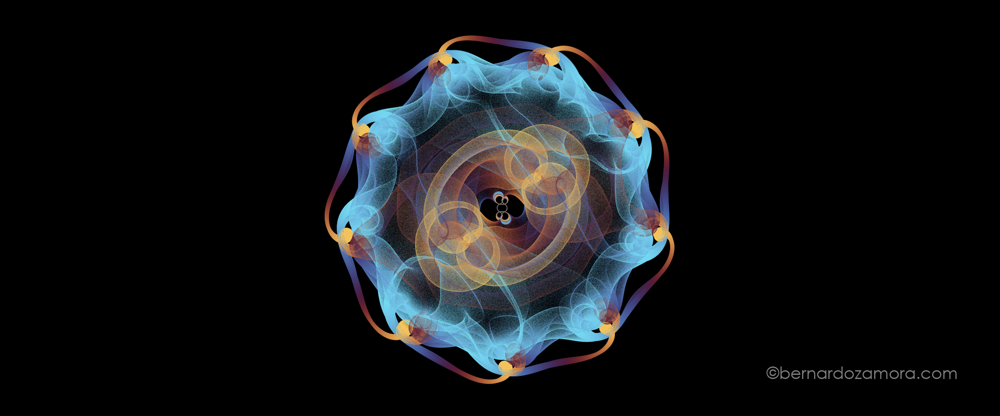
A polynomial equation has as many roots (zeroes) as its highest degree. This plate maps the roots of an 8th-degree polynomial across millions of small variations, weaving them into a striking, multi-colored tapestry.